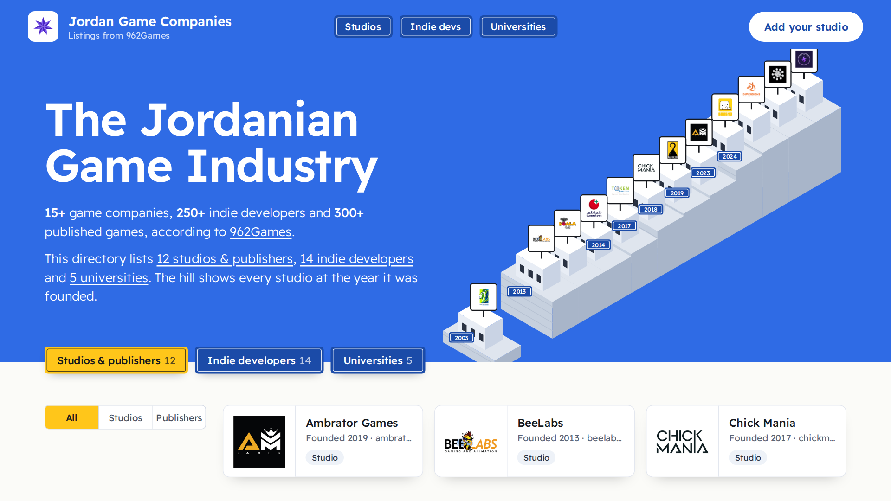
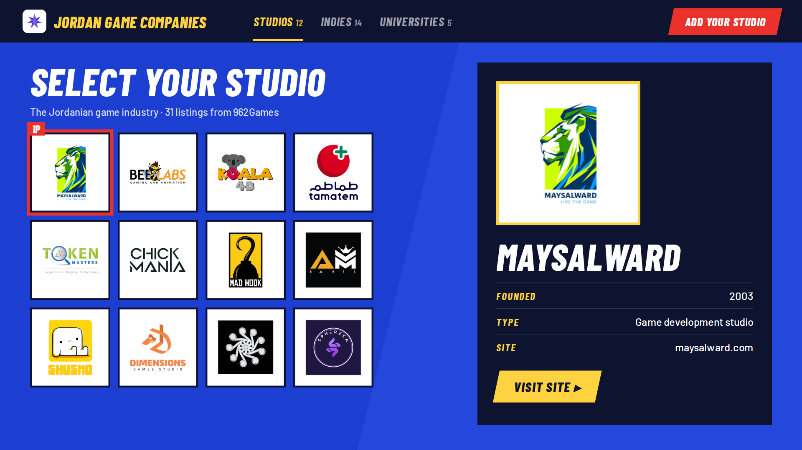
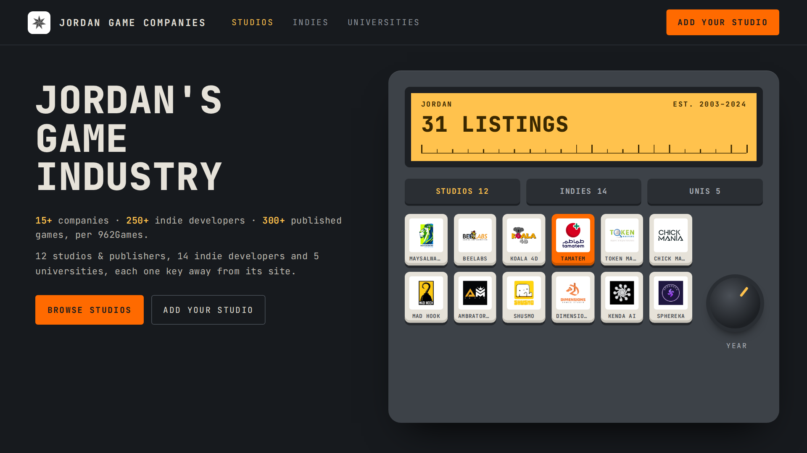
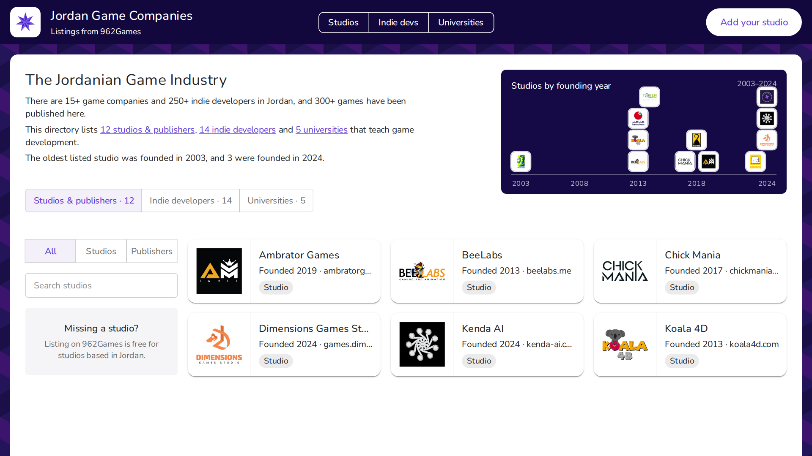

أربع اتجاهات لنفس الصفحة
كل صورة هي أول شاشة من نفس الصفحة، مبنية ببيانات 962Games الحقيقية. الفكرة وحدة بكل الخيارات: عنوان وأرقام، تابات، فلاتر، وشبكة الشركات.

سماء زرقا، وكل استوديو بيت حجر على جبل عمّان مرتّب حسب سنة تأسيسه (2003 لـ 2024) واللوغو على يافطة فوق السطح. التابات يافطات شوارع زرقا، والعنصر المختار أصفر زي التكسي.

زي شاشة اختيار اللاعب بألعاب الأركيد: شبكة لوغوهات، وجنبها معاينة كبيرة للشركة المختارة مع زر زيارة الموقع.

كونسول أجهزة: كل شركة زر مفتاح، وشاشة كهرمانية فيها العدد، ودولاب بتلفّه بين سنين التأسيس.

تصميم gamecompanies.com زي ما هو (بنفسجي غامق مع مكعبات وورقة بيضاء) للأردن، مع خط زمني لسنين التأسيس.